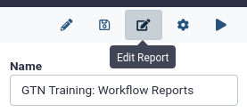
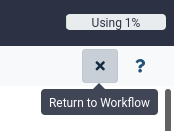

Workflows are a powerful Galaxy feature that allows you to scale up your analysis by performing an end-to-end analysis with a single click of a button. In order to aid interpretation of workflow results, workflow reports may be configured to combine and display the most important analysis results in a single, customizable view.
This is especially useful if you are configuring a Galaxy workflow to share with others. Not everybody is familiar with Galaxy, and having all the important results shown on a single page can be very useful.
This tutorial will guide you through the steps of defining such a report for your workflow, and how to view workflow reports after running the workflow.
For this tutorial, we will use the workflow from the Galaxy 101 for everyone tutorial. If you have not done this tutorial yet, the only thing you need to know is that this is a workflow that takes as input a table of data about different species of iris plants, this table is subsequently sorted and filtered, and some plots are made. The specifics of the workflow are not important for this tutorial, only that it outputs a number of different kinds of outputs (images, tables, etc).
We will start by importing this workflow into your Galaxy account:
Click on Workflow on the top menu bar of Galaxy. You will see a list of all your workflows.
Click on galaxy-uploadImport at the top-right of the screen
Paste the following URL into the box labelled “Archived Workflow URL”: https://training.galaxyproject.org/training-material/topics/galaxy-interface/tutorials/workflow-reports/workflows/galaxy-101-everyone.ga
Click the Import workflow button
Below is a short video demonstrating how to import a workflow from GitHub using this procedure:
Video: Importing a workflow from URL
Run the workflow and view the default report
Galaxy will produce a default report for any workflow. This default report shows the workflow inputs, outputs, and a description of the workflow on a single web page. You will usually want to customize this report yourself, but it provides a good starting point.
Let’s run the workflow and view the default report.
Hands-on: Run the workflow
Import the file iris.csv via link
https://zenodo.org/record/1319069/files/iris.csv
Copy the link location
Click galaxy-uploadUpload Data at the top of the tool panel
Select galaxy-wf-editPaste/Fetch Data
Paste the link(s) into the text field
Press Start
Close the window
Run GTN Training: Galaxy 101 For Everyoneworkflow using the following parameters:
“Send results to a new history”: No
param-file“1: Iris Dataset”“: the iris.csv file we just uploaded
Click on Workflow on the top menu bar of Galaxy. You will see a list of all your workflows.
Click on the workflow-run (Run workflow) button next to your workflow
Configure the workflow as needed
Click the Run Workflow button at the top-right of the screen
You may have to refresh your history to see the queued jobs
View the workflow outputsgalaxy-eye once the workflow has completed
The workflow produces several text and tabular outputs, and two plot (image) outputs
After the workflow has completed, we can access the workflow report. The report does not appear in your history, but can be accessed from the User -> Workflow Invocations menu on the top bar. An invocation of a workflow means one run (execution) of the workflow.
Hands-on: View the default workflow report
In the top menu bar, go to User -> Workflow Invocations
Our latest workflow run should be listed at the top.
Click on it to expand it:
Click View Report in the expanded view of the workflow invocation.
You should see a page like this. It contains:
The input file
The (text-based) output files
A summary of the workflow itself
Customize the workflow report
This is a great start, but we might want to customize this report to fit our needs.
Hands-on: Open the workflow report editor
Open the workflow in the workflow editor
In the top menu bar, click on Workflows
Click on the name of the workflow you want to edit
Select galaxy-wf-editEdit from the dropdown menu to open the workflow in the workflow editor
Click on Edit Reportgalaxy-wf-edit in the top-right of the screen

You should see something like the image below, you will find
Text editor in the center, with the default report specified in Markdown format
A list of components that can be added to the report in the left-hand panel
Scroll down the report and look at all the components
notice that there is no plot image output shown, even though we know that was created, we will add this to the report later.
To edit this report, we can edit the markdown directly. For example, let’s
change the title of the report to # Iris Analysis
add a line of introduction text for whoever will read the report, something like:
# Workflow Execution Report
# Iris analysis
Below are the results for the Iris analysis workflow.
The report is specified in Markdown format, this is a simple markup language that is commonly used.
Some basics of the Markdown syntax can be found in this cheatsheet
Let’s play around with some components we can add via the left-hand panel
Under the Miscellaneous section in the left-hand menu, select
“Galaxy version as text” and
“Current Time as text”
You will see bits of Markdown are added to your report
You can add some text around these parts as well
Make sure the beginning of your report looks something like this:
# Iris Analysis
Below are the results for the Iris analysis workflow.
This workflow was run on:
```galaxy
generate_time()```
With Galaxy version:
```galaxy
generate_galaxy_version()```
Let’s try to add the missing plot outputs as well:
On the left-hand panel, under the History section, choose Image
You should see a list of outputs to insert into the report:
Hmmm, no obvious options to insert the plot outputs. We will need to label the outputs in our workflow first, before we can use them here.
But before we do that, let’s save our changes and run the workflow again to view their effects.
Click on galaxy-cross (Return to Workflow) in the top-right of the screen.

Click on galaxy-save (Save Workflow) to save our changes to the report.
Run the workflow again
Select iris.csv as the input
Click on Workflow on the top menu bar of Galaxy. You will see a list of all your workflows.
Click on the workflow-run (Run workflow) button next to your workflow
Configure the workflow as needed
Click the Run Workflow button at the top-right of the screen
You may have to refresh your history to see the queued jobs
View the new workflow report, you should see your changes, something like:
Go to User on the top menu bar of Galaxy.
Click on Workflow invocations
Here you will find a list of all the workflows you have run
Click on the name of a workflow invocation to expand it
Click on View Report to go to the workflow report page
Note: The report can also be downloaded in PDF format by clicking on the galaxy-wf-report-download icon.
In the next section, we will add labels to our workflow outputs to more easily add them to our workflow report
Add labels to workflow outputs
As you saw in the previous step, we might need to edit the workflow to add labels outputs so we can easily distinguish between the outputs when adding them to the report. This is especially useful for large workflows with many outputs.
Hands-on: Add output labels to the workflow
Open the workflow in the workflow editor
In the top menu bar, click on Workflows
Click on the name of the workflow you want to edit
Select galaxy-wf-editEdit from the dropdown menu to open the workflow in the workflow editor
Click on one of the Scatterplottool boxes
On the right-hand panel, you should see the settings for the tool
Scroll to the bottom and find the Configure Output: .. sections
From the box we can see that output1 (the first) is a png output, and output2 is a pdf output of the plot.
Let’s use the png output for our report.
Also take note of the plot title, since we have 2 runs of the scatterplot tool in this workflow. One plot is about the petals of the iris, and one about the sepals (in this screenshot it is the sepal plot)
Add an output label for the png output
Click on “Configure output: output1”
Add a descriptive label (e.g. “Sepal plot (PNG)”)
Notice that the label on the box changs as well
Repeat this process and add an output label for the other plot as well
Label it something like “Petal plot (PNG)”
Click on the Uniquetool toolbox
This tool gives a list of all the unique Iris species found in the dataset
Let’s add this to our report as well
Add a label to this output (e.g. “Iris Species”)
Savegalaxy-save the workflow (Important!)
Now that we have added our output labels, let’s go back to our report editor and add these outputs
Hands-on: Open the workflow report editor
Open the workflow in the workflow editor (if not already open)
In the top menu bar, click on Workflows
Click on the name of the workflow you want to edit
Select galaxy-wf-editEdit from the dropdown menu to open the workflow in the workflow editor
Click on Edit Reportgalaxy-wf-edit in the top-right of the screen
You should see the report with the changes you made earlier
Add the plots and the unique species list outputs to the report
Use “Images” in the left-hand panel for the plot outputs
Use “Dataset” for the unique species list
You should see more options now after the labels we added to the workflow outputs (“Sepal Plot (PNG)”, “Petal Plot (PNG)”, and “Iris Species”)
Add some text and/or headers before each included output
Play around here, add other component you think look interesting and see what happens!
Here you will find a list of all the workflows you have run
Click on the name of a workflow invocation to expand it
Click on View Report to go to the workflow report page
Note: The report can also be downloaded in PDF format by clicking on the galaxy-wf-report-download icon.
It should look something like:
Well done! You have created a customized workflow report with text and workflow outputs. There are a lot more options to explore, for example you can also include:
links to datasets for easy downloading
index files (e.g. for BAM or VCF files)
visualisations
job metrics
peeks into dataset (useful for large files that cannot be included in their entirety in the report)
..and more!
Make your reports nicer!
There are a number of options, specifically for tabular data, that can allow it to render more nicely in your workflow reports and pages and anywhere that GalaxyMarkdown is used.
title to give your table a title
footer allows you to caption your table
show_column_headers=false to hide the column headers
compact=true to make the table show up more inline, hiding that it was embedded from a Galaxy dataset.
The existing history_dataset_display directive displays the dataset name and some useful context at the expense of potentially breaking the flow of the document
The existing history_dataset_embedded directive was implemented to try to inline results more and make the results more readable within a more… curated document. It is dispatches on tabular types and puts the results in a table but the table doesn’t have a lot of options.
The history_dataset_as_table directive mirrors the history_dataset_as_image directive: it tries harder to coerce the data into a table and provides new table—specific options. The first of these is “show_column_headers which defaults to true`.
Figures in general should have titles and legends — so there is the “title” and “footer” options also.
Input: Galaxy Markdown
```galaxy history_dataset_as_table(history_dataset_id=1e8ab44153008be8,show_column_headers=false,title='Binding Site Results',footer='Here is a very good figure caption for this table.') ```
Output: Example Screenshot
This applies to any GalaxyMarkdown elements, i.e. the things you’ve clicked in the left panel to embed in your Workflow Report or Page
By adding a collapse="" attribute to a markdown element, you can make it collapsible. Whatever you put in the quotes will be the title of the collapsible box.
If you share this workflow with others, they will get the same report every time they run the workflow.
If you would like to share the workflow report of a specific run, you can do so by creating a Galaxy page for it. This page can then be shared (either via link or with specific users), or published for all to see under Shared Data -> Pages in the top menu.
Hands-on: Share the workflow report as a Galaxy page
Open the workflow report
Go to User on the top menu bar of Galaxy.
Click on Workflow invocations
Here you will find a list of all the workflows you have run
Click on the name of a workflow invocation to expand it
Click on View Report to go to the workflow report page
Note: The report can also be downloaded in PDF format by clicking on the galaxy-wf-report-download icon.
Click on Edit Markdowngalaxy-wf-edit button at the top right (next to “Galaxy Report”)
Here you can edit the title and the report itself, if desired
Note: this list is always accessible via top menu, User -> Pages
Click on the dropdown icon galaxy-dropdown next to the page title
Select “Share or Publish”
Here you can make the page public or share with individual users
If you make the page public, anybody will be able to see it under Shared Data -> Pages from the top menu bar
Great work! You have viewed, customized and shared a workflow report. This makes it easy to view the most important results of a workflow in a single view. Here is an example of a final workflow from this tutorial
You've Finished the Tutorial
Please also consider filling out the Feedback Form as well!
Key points
Workflow reports help you display the most important results of a workflow in an organized fashion.
Workflow reports are configured as part of the workflow definition, for every run of the workflow, a report will be automatically created
Workflow reports can be viewed from the top menu, User -> Workflow Invocations.
Labels must be added to workflow outputs before they can be included
Many different components can be added to a workflow report (datasets, images, links to datasets, job metrics, text and sections, visualisations, and much more!)
Did you use this material as an instructor? Feel free to give us feedback on how it went.
Did you use this material as a learner or student? Click the form below to leave feedback.
Hiltemann, Saskia, Rasche, Helena et al., 2023 Galaxy Training: A Powerful Framework for Teaching! PLOS Computational Biology 10.1371/journal.pcbi.1010752
Batut et al., 2018 Community-Driven Data Analysis Training for Biology Cell Systems 10.1016/j.cels.2018.05.012
@misc{galaxy-interface-workflow-reports,
author = "Saskia Hiltemann",
title = "Workflow Reports (Galaxy Training Materials)",
year = "",
month = "",
day = ""
url = "\url{https://training.galaxyproject.org/training-material/topics/galaxy-interface/tutorials/workflow-reports/tutorial.html}",
note = "[Online; accessed TODAY]"
}
@article{Hiltemann_2023,
doi = {10.1371/journal.pcbi.1010752},
url = {https://doi.org/10.1371%2Fjournal.pcbi.1010752},
year = 2023,
month = {jan},
publisher = {Public Library of Science ({PLoS})},
volume = {19},
number = {1},
pages = {e1010752},
author = {Saskia Hiltemann and Helena Rasche and Simon Gladman and Hans-Rudolf Hotz and Delphine Larivi{\`{e}}re and Daniel Blankenberg and Pratik D. Jagtap and Thomas Wollmann and Anthony Bretaudeau and Nadia Gou{\'{e}} and Timothy J. Griffin and Coline Royaux and Yvan Le Bras and Subina Mehta and Anna Syme and Frederik Coppens and Bert Droesbeke and Nicola Soranzo and Wendi Bacon and Fotis Psomopoulos and Crist{\'{o}}bal Gallardo-Alba and John Davis and Melanie Christine Föll and Matthias Fahrner and Maria A. Doyle and Beatriz Serrano-Solano and Anne Claire Fouilloux and Peter van Heusden and Wolfgang Maier and Dave Clements and Florian Heyl and Björn Grüning and B{\'{e}}r{\'{e}}nice Batut and},
editor = {Francis Ouellette},
title = {Galaxy Training: A powerful framework for teaching!},
journal = {PLoS Comput Biol} Computational Biology}
}
Funding
These individuals or organisations provided funding support for the development of this resource
Questions:


{kind=link}
{kind=link}
{kind=link}